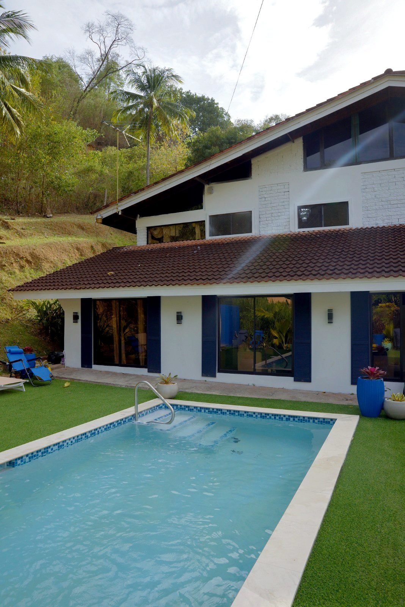
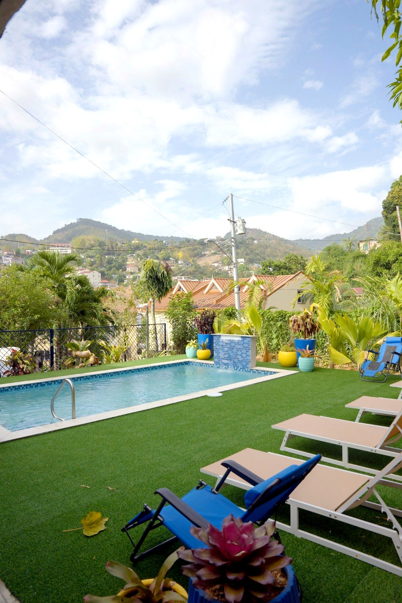
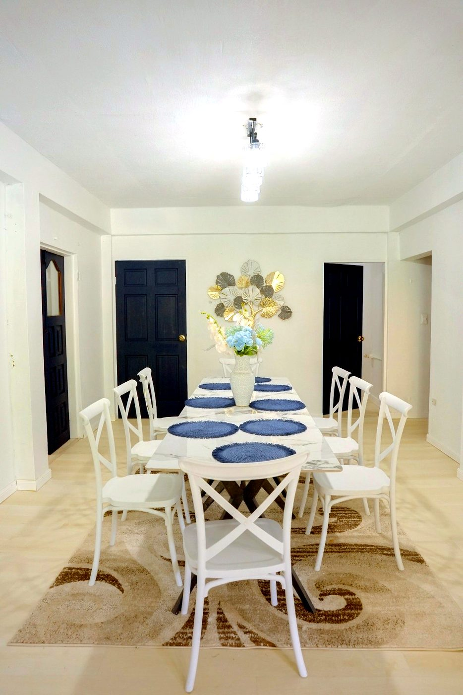
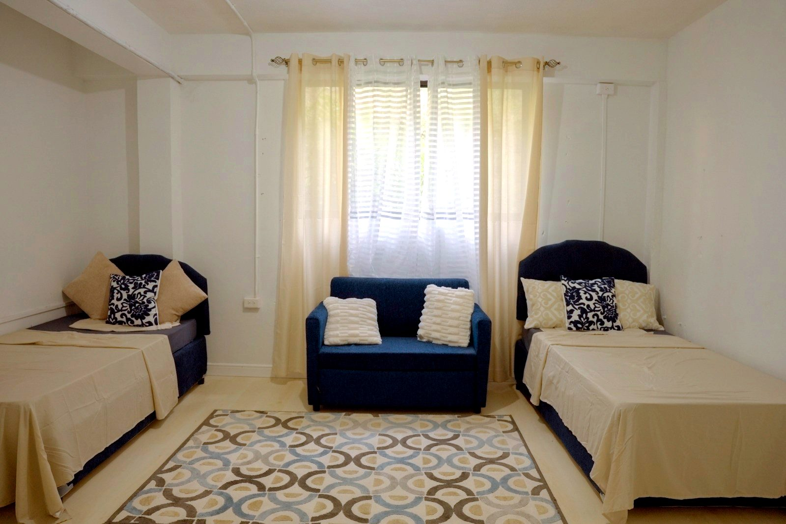
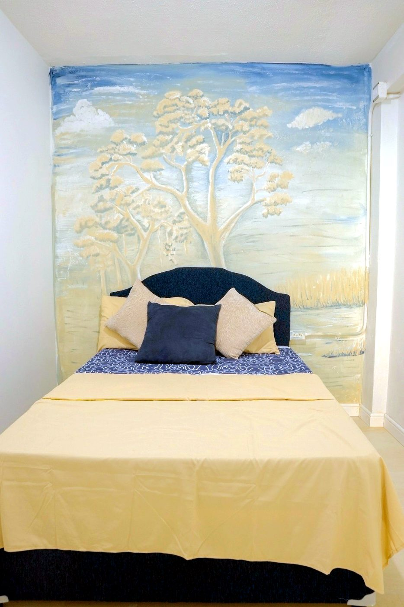
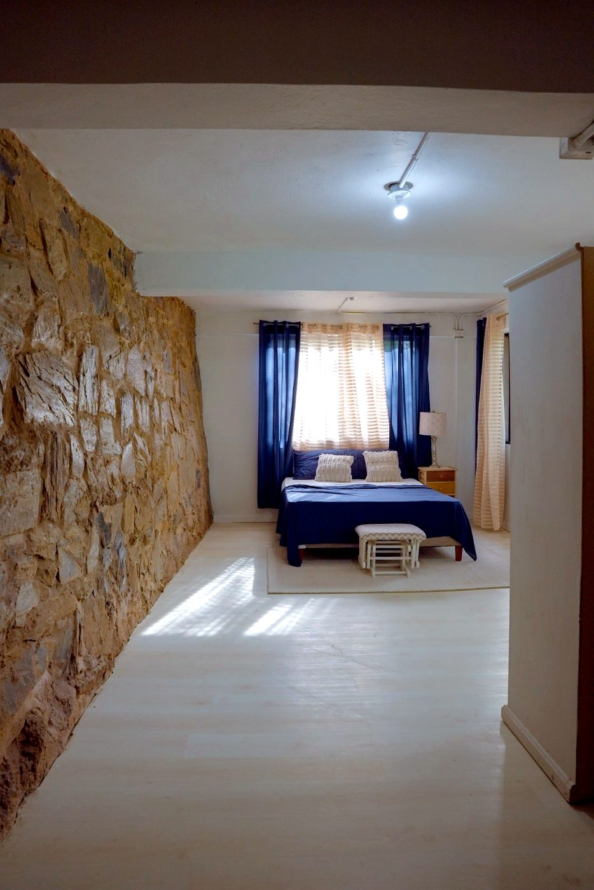

A Day at Juniper House
Life at Juniper
A calm, familiar rhythm of care, connection and small joys — every single day.
Daily Life
The rhythm of a Juniper House day
Morning Care
Personalised assistance to start the day with dignity
Breakfast
A warm, nutritious start shared together
Activities
Engaging group programmes and hobbies
Group Physiotherapy
Guided movement and mobility support
Lunch
Balanced, home-cooked midday meal
Afternoon Recreation
Music, games and social time
Dinner
An unhurried evening meal together
Evening Relaxation
Quiet time to unwind and rest
Stay Engaged
Activities & Wellness
Days at Juniper House are filled with moments worth looking forward to — movement, music, creativity and celebration.
- Exercise
- Group Physiotherapy
- Music
- Games
- Arts & Crafts
- Movie Afternoons
- Birthday Celebrations
- Religious Observances
- Holiday Celebrations
Around Our Homes
Moments & spaces






Experience It Yourself
Come spend a morning with us.
The best way to know Juniper House is to visit — join us during activity time and meet the family.